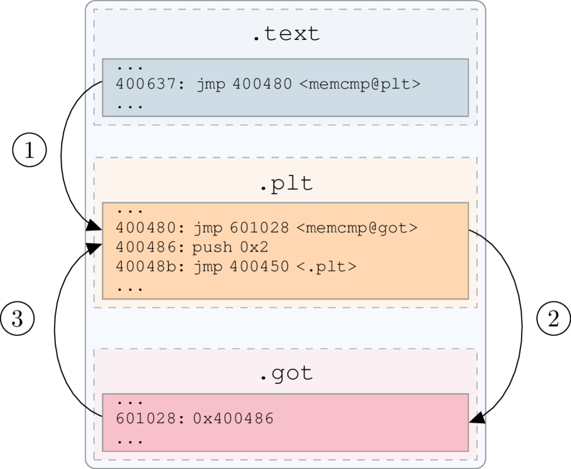
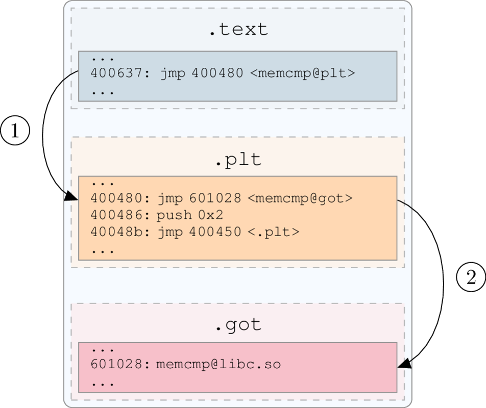

05 - Infecting the plt/got¶
The objective of this tutorial is to hook an imported function in an ELF binary.
Scripts and materials are available here: materials
By Romain Thomas - @rh0main
Hooking imported functions by infecting the .got section is a well-known technique 1 2 and this tutorial will be focused
on its implementation using LIEF.
These figures illustrate the plt/got mechanism:
{kind=link}

With lazy binding, the first time that the function is called the got entry redirects to the plt instruction.¶
{kind=link}

The Second time, got entry holds the address in the shared library.¶
Basically the infection is done in two steps:
Firstly, we inject our hook
Secondly, we redirect the targeted function to our hook by patching the
got
It can be summed up by the following figure:
{kind=link}
As example, we will use a basic crackme which performs a memcmp(3) on the flag and user’s input.
#include <stdio.h>
#include <stdlib.h>
#include <string.h>
// Damn_YoU_Got_The_Flag
char password[] = "\x18\x3d\x31\x32\x03\x05\x33\x09\x03\x1b\x33\x28\x03\x08\x34\x39\x03\x1a\x30\x3d\x3b";
inline int check(char* input);
int check(char* input) {
for (int i = 0; i < sizeof(password) - 1; ++i) {
password[i] ^= 0x5c;
}
return memcmp(password, input, sizeof(password) - 1);
}
int main(int argc, char **argv) {
if (argc != 2) {
printf("Usage: %s <password>\n", argv[0]);
return EXIT_FAILURE;
}
if (strlen(argv[1]) == (sizeof(password) - 1) && check(argv[1]) == 0) {
puts("You got it !!");
return EXIT_SUCCESS;
}
puts("Wrong");
return EXIT_FAILURE;
}
The flag is xored with 0x5C. To validate the crackme, the user has to enter Damn_YoU_Got_The_Flag:
$ crackme.bin foo
Wrong
$ crackme.bin Damn_YoU_Got_The_Flag
You got it !!
The hook will consist in printing arguments of memcmp and returning 0:
#include "arch/x86_64/syscall.c"
#define stdout 1
int my_memcmp(const void* lhs, const void* rhs, int n) {
const char msg[] = "Hook memcmp\n";
_write(stdout, msg, sizeof(msg));
_write(stdout, (const char*)lhs, n);
_write(stdout, "\n", 2);
_write(stdout, (const char*)rhs, n);
_write(stdout, "\n", 2);
return 0;
}
As the hook is going to be injected into the crackme, it must have the following requirements:
Assembly code must be position independant (compiled with
-fPICor-pie/-fPIEflags)Don’t use external libraries such as
libc.so(-nostdlib -nodefaultlibsflags)
Due to the requirements, the hook is compiled with: gcc -nostdlib -nodefaultlibs -fPIC -Wl,-shared hook.c -o hook.
Injecting the hook¶
The first step is to inject the hook into the binary. To do so we will add a Segment:
import lief
crackme = lief.parse("crackme.bin")
hook = lief.parse("hook")
segment_added = crackme.add(hook.segments[0])
All assembly code of the hook stands in the first LOAD segment of hook.
Once the hook added, its virtual address is virtual_address of segment_added and we can processed to the got patching.
Patching the got¶
LIEF provides a function to easily patch the got entry associated with a Symbol:
-
Binary.patch_pltgot(*args, **kwargs) Overloaded function.
patch_pltgot(self: lief.ELF.Binary, symbol_name: str, address: int) -> None
Patch the imported symbol’s name with the
addresspatch_pltgot(self: lief.ELF.Binary, symbol: LIEF::ELF::Symbol, address: int) -> None
Patch the imported
Symbolwith theaddress
The offset of the memcmp function is stored in the value attribute of the associated dynamic symbol. Thus its virtual address will be:
my_memcpy:value+segment_added.virtual_address
my_memcmp = hook.get_symbol("my_memcmp")
my_memcmp_addr = segment_added.virtual_address + my_memcmp.value
Finally we can patch the memcmp from the crakme with this value:
crackme.patch_pltgot('memcmp', my_memcmp_addr)
And rebuild it:
crackme.write("crackme.hooked")
Run¶
As a check on the input size is performed before checking the flag value, we have to provide an input with the correct length (no matter its content):
$ crackme.hooked XXXXXXXXXXXXXXXXXXXXX
Hook add
Damn_YoU_Got_The_Flag
XXXXXXXXXXXXXXXXXXXXX
You got it !!
References